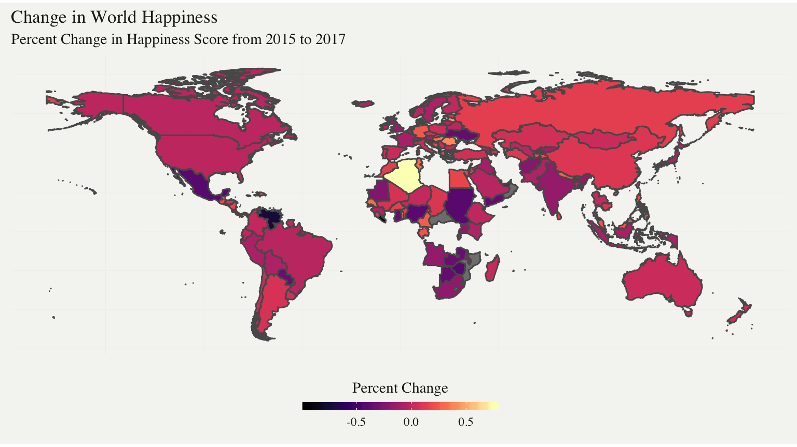

library(tidyverse)
library(readr)
library(sf)
library(viridis) #for pretty mapsHappiness can be a complicated state of feeling to acquire and understand. On top of simply finding the happiest place on earth, our report aims to discover and analyze the regional changes and influencing factors of world happiness level from 2015 to 2017. We did this utilizing a Kaggle dataset based on the World Happiness Report.
# Data Wrangling
happy2015 <- read.csv("world-happiness-report/2015.csv")
happy2017 <- read.csv("world-happiness-report/2016.csv")
countryShapes <- read_sf("TM_WORLD_BORDERS-0.3") %>%
select("Country" = NAME, geometry)
happyRank2015 <- happy2015 %>%
select(Country, Happiness.Score) %>%
rename( "HappinessScore2015" = "Happiness.Score")
happyRank2017 <- happy2017 %>%
select(Country, Happiness.Score) %>%
rename( "HappinessScore2017" = "Happiness.Score")
happyChange <- left_join(happyRank2015,happyRank2017, by = "Country")%>%
mutate(happinessChange = HappinessScore2017-HappinessScore2015)
worldHappyChange <- inner_join(happyChange, countryShapes, by = "Country")ggplot() +
geom_sf(data = worldHappyChange, aes(fill = happinessChange)) +
theme_map()+
labs(x = NULL,
y = NULL,
title = "Change in World Happiness",
subtitle = "Percent Change in Happiness Score from 2015 to 2017") +
theme(legend.position = "bottom")+
scale_fill_viridis(option = "magma",
name = "Percent Change",
guide = guide_colorbar(
direction = "horizontal",
barheight = unit(2, units = "mm"),
barwidth = unit(50, units = "mm"),
draw.ulim = F,
title.position = 'top',
# some shifting around
title.hjust = 0.5,
label.hjust = 0.5)
)
In the world map seen above, percent change of happiness score for each country is represented in a color scale that displays the improvement, or degradation of happiness. The vacant areas are countries that were missing values for at least one year. The map shows that people in Algeria, Romania, Germany, Senegal, Cameroon, Nepal had a significantly higher percent change in happiness than other countries from 2015 to 2017, while the happiness level decreased by a noticeable percentage in Venezuela, Mexico, Sudan, Nigeria, Zimbabwe, and Ukraine. This result unsurprisingly corresponded with the countries’ political movement and economic progress between 2015 and 2017. For example, Algeria underwent positive governmental reforms under the leadership of President Bouteflika1 Meanwhile, Sudan suffered economic turbulence and political protests after the split of their ruling parties2
However, simply looking at percentage change does not tell much about how different regions and countries of the world compare in absolute happiness. Continue reading on “More Information” page to learn more about world happiness.
“Algeria Country Profile.” BBC, 16 Dec. 2018, https://www.bbc.com/news/world-africa-14118852↩
“Sudan Country Profile.” BBC, 16 Dec. 2018, https://www.bbc.com/news/world-africa-14094995↩